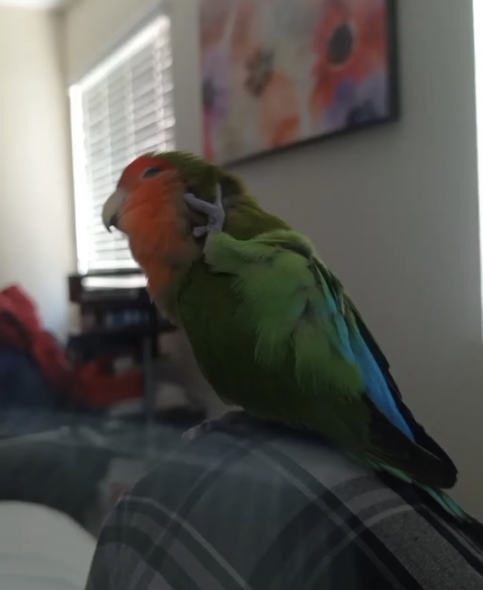
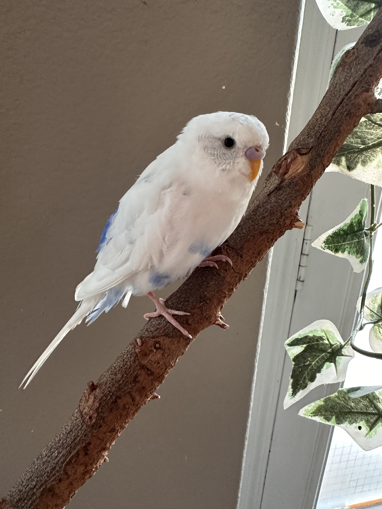
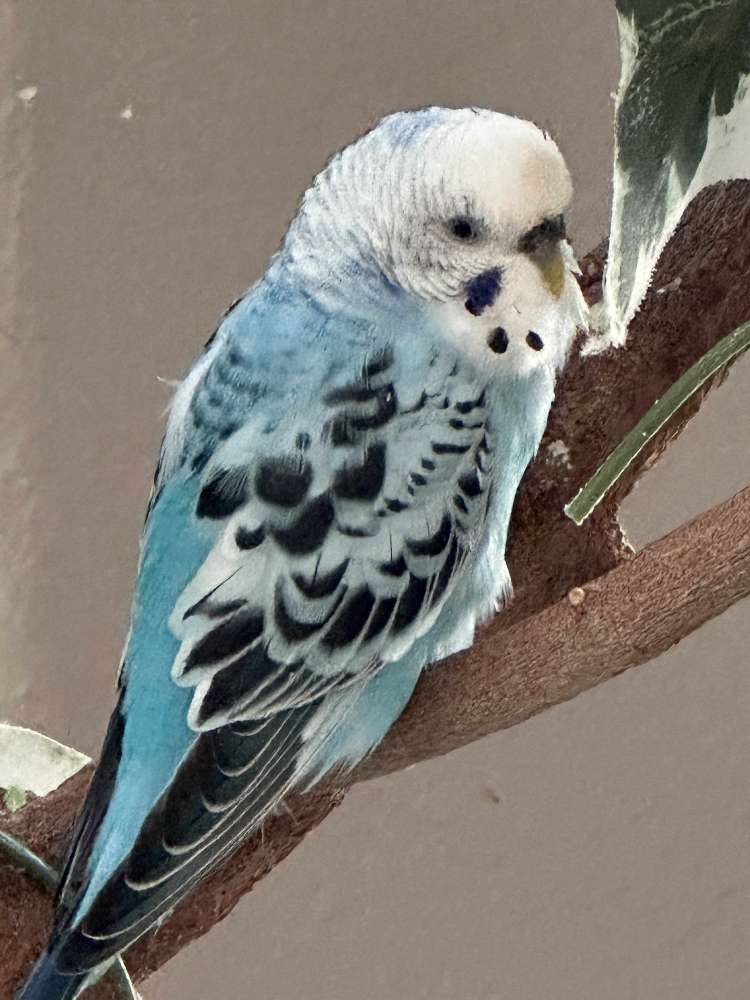

Beaker |
Niko |
Taro |
|---|---|---|
|  |  |  |
|
Beaker is a 3 year old lovebird! He's a very loud and very energetic bird with anger issues. |
Niko is also 3 years old, but he's a parakeet! He's sweet and very kind, with a pretty voice to match. |
Taro is the same age as Niko and the same kind of bird! She's very timid and skittish, but also very clever. |
|
Beaker's Chirping |
Niko's Chirping/Singing Taro doesn't sing as much as Niko does. |
|
|
Here is a video about Lovebirds! Specifically ones that now live in Phoenix, Arizona. |
Here is a video about a Parakeet! |
|